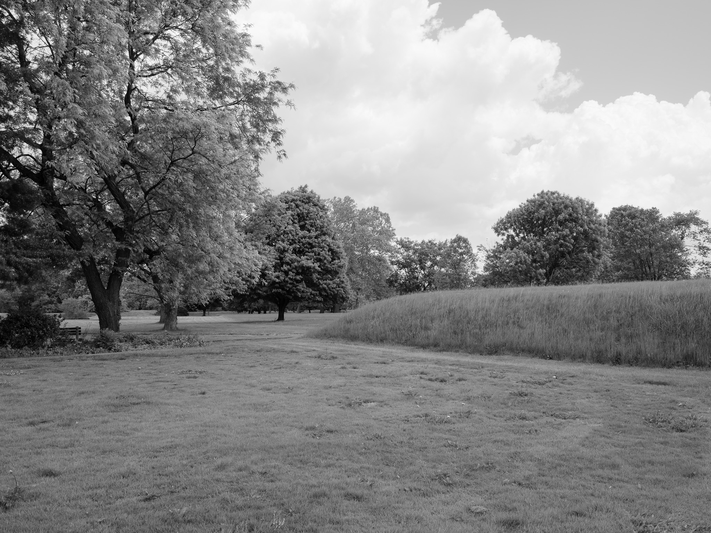
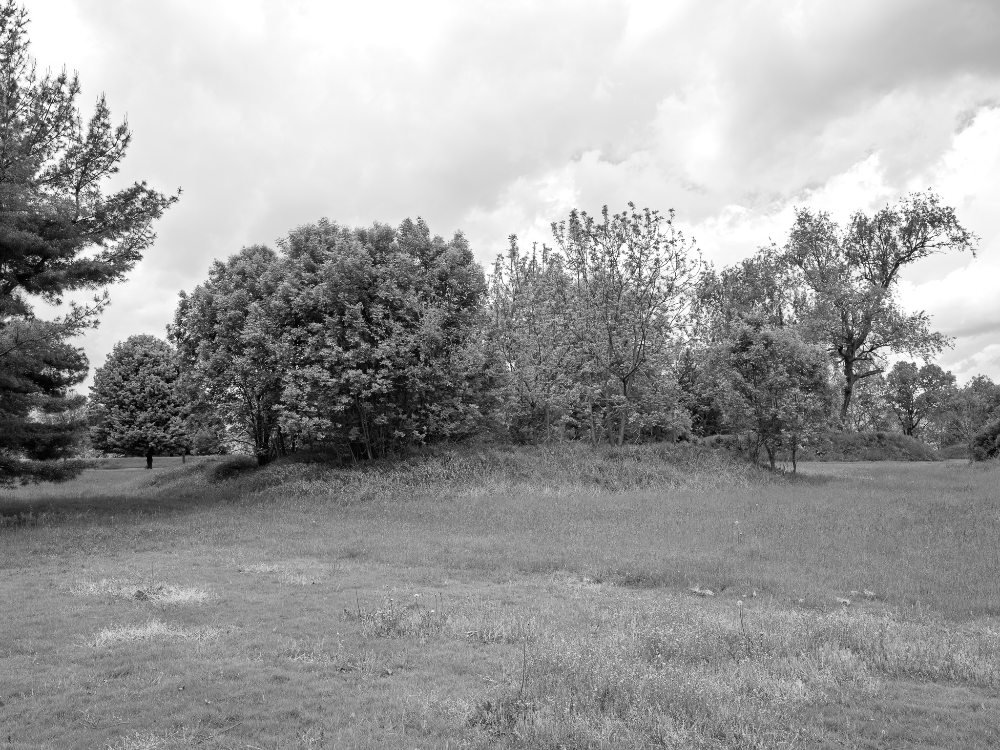
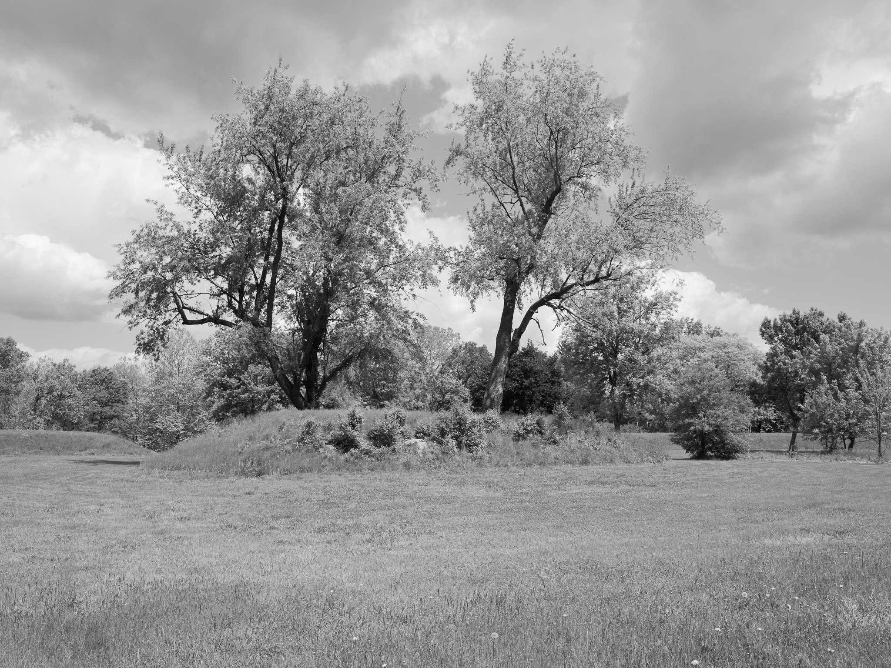
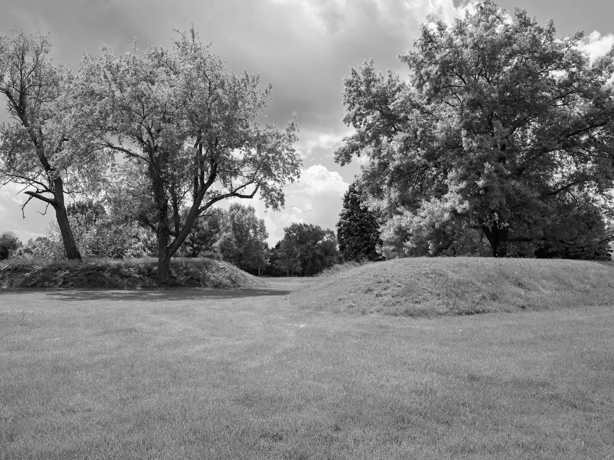

A 70-acre Ohio History Connection site holding the Octagon Earthworks, on which a private country club ran a golf course from 1910 to 2025.




These photographs are in the public domain (CC0 1.0). No permission is required. No credit is required.
Optional credit line: Public Lands Institute, publiclandsinstitute.net/sites/octagon-earthworks.html
To tell PLI where an image was used, write to contact@publiclandsinstitute.net.